Prompt-to-Radar
A generative radar world model for Real2Sim2Real robot navigation
TL;DRTrain a robot's radar perception on simulated radar from a world model, then take it back to the real robot: navigation success rises 8 points and collision runs drop four-fold.
Radar sees in the dark. Learning it shouldn't need months of driving.
Radar keeps working in darkness, rain and glare, but learning radar perception needs labeled data for hard scenes that are costly to collect on a physical robot. We present Prompt-to-Radar, a generative radar world model that reconstructs real scenes from a robot’s map or video, varies obstacles and trajectories, and renders labeled simulated radar data through a configurable, ray-traced sensor model.
Adding its data improves real RADIal detection for three detector architectures by 5–16 points in AP and 9–15 points in F1. We close the Real2Sim2Real loop on a LoCoBot: with the navigation policy unchanged, a detector trained on generated plus real radar raises navigation success in unseen corridors by 8 percentage points and cuts runs with a collision four-fold. These results show that radar perception learned in a world model transfers to physical robot navigation.
Can a robot learn its radar perception inside a world model, and keep what it learned when it drives a real corridor?
From a sentence to a planner input
Ray tracing runs once per scene and is cached. Every block after it runs live on every frame, with its own knobs.
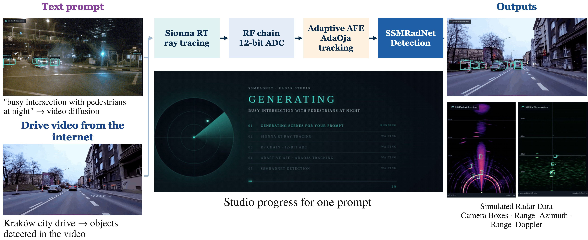
Generate
A video diffusion transformer turns a prompt into driving scenes; a drive video or robot map also works.
Simulate
Sionna RT traces every echo from geometry and radio materials; waveform, front end and ADC run on top.
Adapt
An analog combiner sends 16 antennas to 12 ADCs along a subspace tracked by AdaOja.
Perceive
SSMRadNet returns class, range, azimuth and radial velocity from ADC data.
Navigate
Detections become tracks: free space, closing speed and obstacles that persist.
The boxes come from simulated radar, not the camera
The camera view is only for display. SSMRadNet sees simulated radar data, and its detections are projected back onto the video.
“Busy intersection with pedestrians at night”
The video diffusion model generates the scene, objects are lifted into 3D, the scene is ray-traced, and SSMRadNet detects vehicles and people on the simulated radar. Night, rain and crowds cost a sentence, not a data campaign.
A 20-second drive through Kraków
Any drive video works as a scene source. Objects found in the video set up the ray-traced scene, the radar chain produces ADC data, and the detections are drawn back as 3D boxes for vehicles and poses for people.
Real2Sim2Real on a LoCoBot
The robot's real corridors are rebuilt in the world model, SSMRadNet is trained there with exact labels, and the detector goes back on the robot with the navigation policy unchanged.
A TI IWR1443BOOST radar on a LoCoBot
76–81 GHz, three transmitters and four receivers in TDM-MIMO for 12 virtual channels, alongside 2D LiDAR, RGB-D and stereo cameras. Every sensor is recorded in sync while the navigation stack builds a live occupancy map.
SSMRadNet runs on the robot because it is about 100× lighter than the other radar detectors and fits the robot's NPU.
Collect and map
Drive the corridors, record all sensors, and build an occupancy map with pose.
Rebuild and train
Rebuild the real corridor in simulation from the robot's map, render the robot's radar along recorded and new trajectories with boxes and chairs moved, and train SSMRadNet with exact labels.
Deploy and navigate
Run the trained detector on the physical robot with the same navigation policy, in unseen corridors with boxes and chairs.
SSMRadNet perception, 100 trials per condition in unseen corridors with boxes and chairs, identical navigation policy.
| Detector | Real only AP / F1 | + World model AP / F1 |
|---|---|---|
| FFT-RadNet | 91 / 86 | 96 / 95+5 |
| T-FFTRadNet | 85 / 86 | 94 / 96+9 |
| SSMRadNet | 78 / 80 | 94 / 95+16 |
AP and F1 in %. The gain shown is in AP. Both training conditions are from this study.
One receive chain, from a ray-traced street to bits and boxes
Ray tracing is cached, so the same scene can be re-run with a different waveform, front end, ADC count or weight precision in seconds. Everything below is simulated radar data.
A ray-traced street
Buildings around the Frauenkirche in central Munich come from OpenStreetMap and are built into a 3D scene that Sionna RT traces. Walls and ground carry radio-material properties, so every echo comes from real street geometry, not a statistical channel model.
The transmitter stays put while a 32×32 array moves and turns along the street; the measured beam keeps following it.
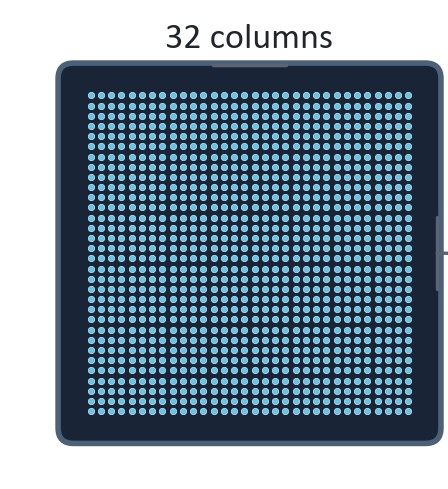
Sensing and communication in one burst
The chain is waveform-agnostic, so the FMCW chirp can be swapped for OFDM with everything else unchanged. The first symbol is a known pattern: dividing the received symbol by it returns the echoes, whose peaks are path lengths. The remaining symbols carry 16-QAM data.
5,000 subcarriers 600 kHz apart at 30 GHz give 0.1 m path bins. Transmit drive was lowered 200× so receiver noise shows.
The channel is low-rank
Converting all 1,024 elements every frame is what costs power and bandwidth. An SVD of each stored channel shows that the two strongest modes already hold most of the energy, so the analog front end combines antennas along those few modes and converts only a handful of signals.
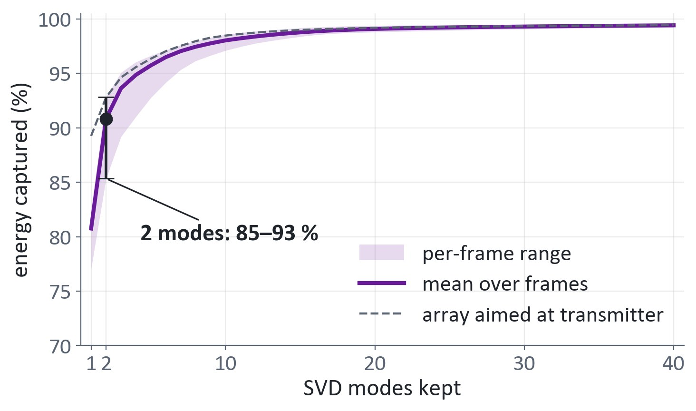
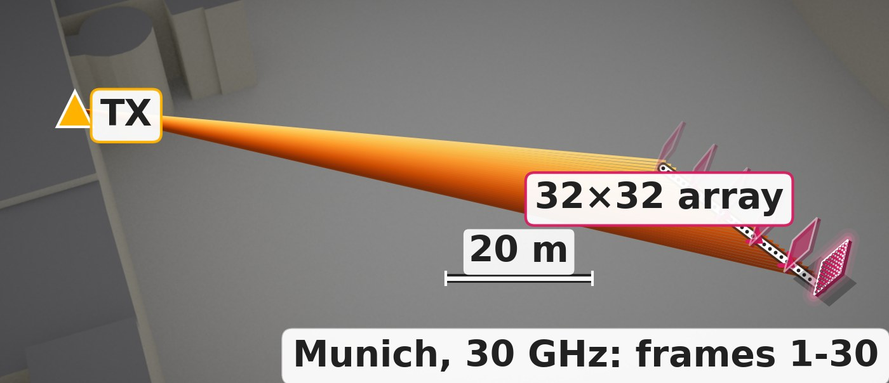
Following a moving line of sight
The shortcut only helps if the tracker keeps up. The array is moved so the line of sight swings 13.6° in eight frames, and because the true subspace is known from the ray-traced channel, the tracker's error is measured exactly.
With 10 updates per frame the error stays at 0.20–0.22 over frames 1–6 and rises to 0.33 at frame 7, where the swing is fastest.
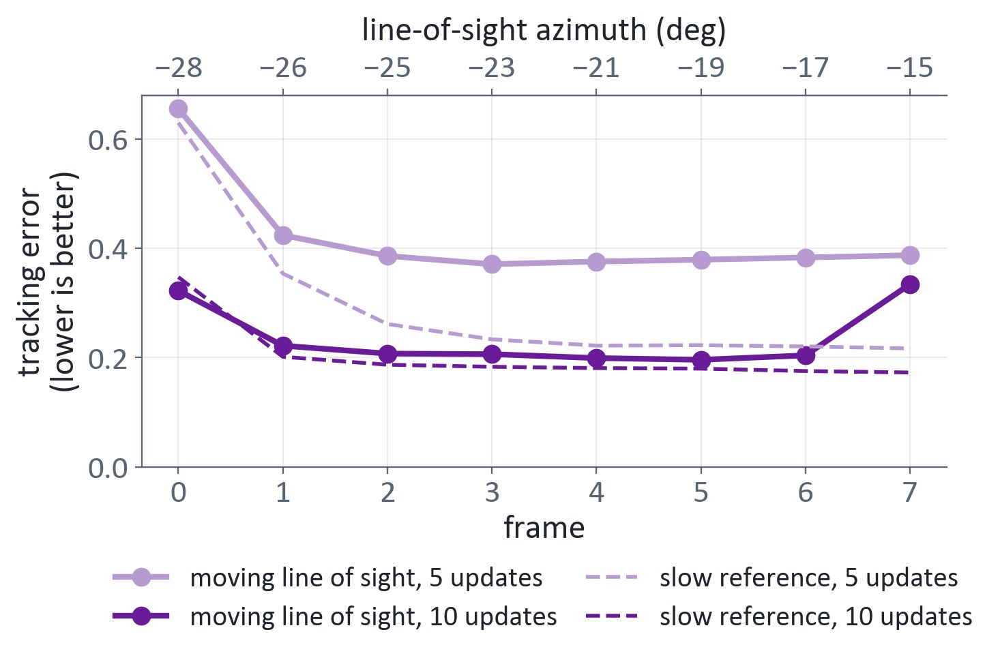
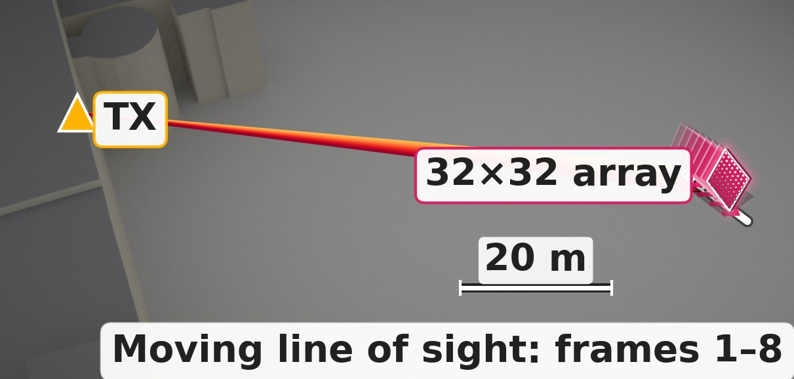
Power versus noise
The front end is a circuit-level model with bias knobs. With ray tracing cached, only the live chain is re-run, so each bias setting's cost shows up directly in the radar image.
Starving only the first amplifier raises the noise floor by 11.9 dB; the Friis cascade formula predicts 12.0 dB. Cutting LO drive 16× saves 59% of receiver power for 0.04 dB of contrast on one scene.
Low-precision analog features
The analog feature extractor's weights can be cut to a few bits. With one mantissa bit (7-bit weights) image contrast drops only 0.26 dB. Binary ±1 rows that span the tracked subspace go further; signs alone fail, even with 20% more rows.
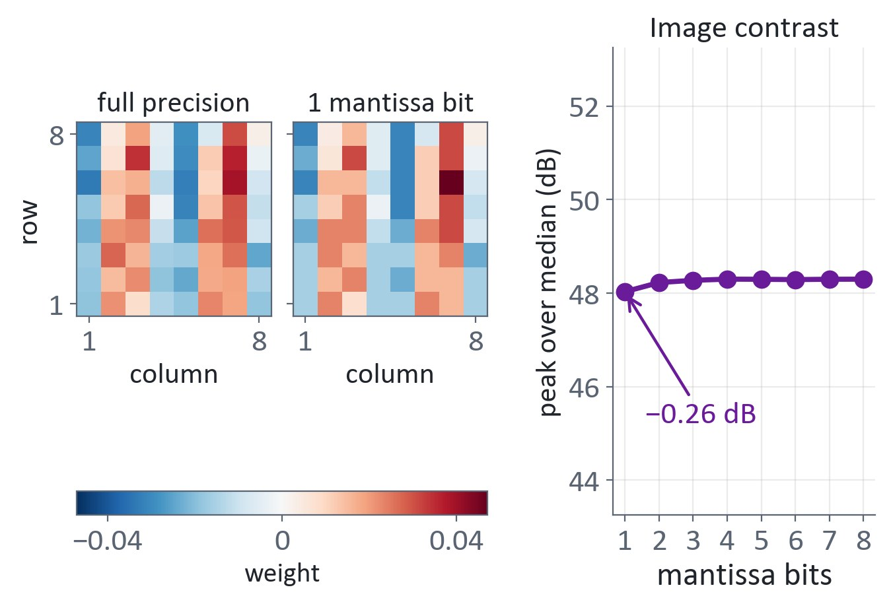
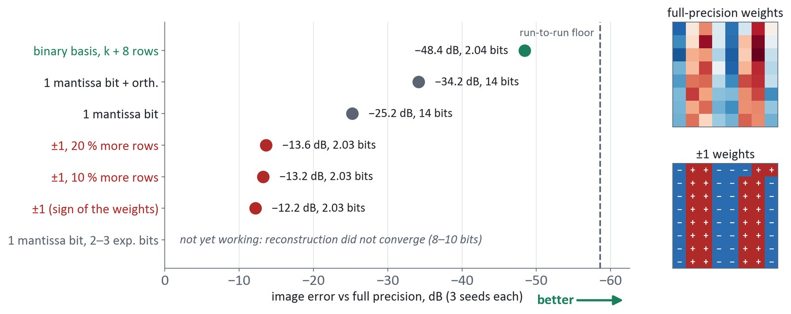
Fewer ADCs on a real drive video
In Radar Studio, an analog combiner turns each transmit slot's 16 antenna signals into 12 measurements, so 12 ADCs convert instead of 16. The 16 channels are reconstructed digitally for SSMRadNet, and AdaOja updates the subspace every frame.
Over the Kraków drive, detections link into consistent tracks: vehicles first, then a crowd of pedestrians late in the drive.
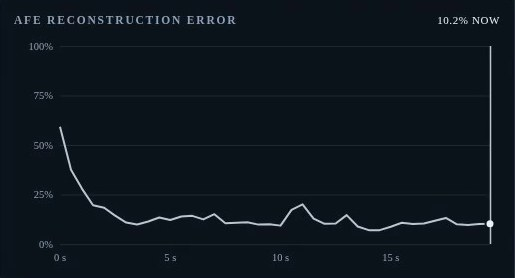
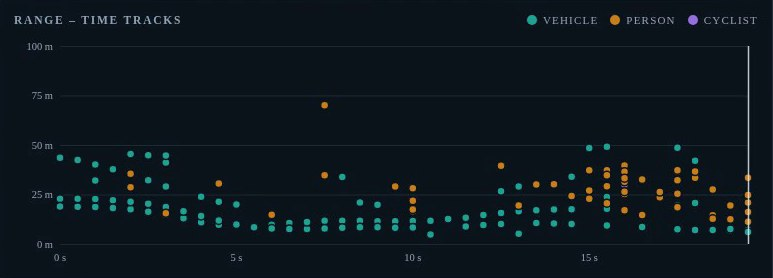
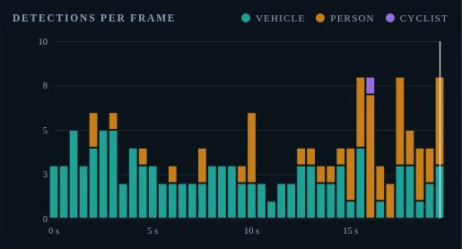
BibTeX
@inproceedings{sen2026prompt2radar,
title = {Prompt-to-Radar: A Generative Radar World Model
for Real2Sim2Real Robot Navigation},
author = {Sen, Anuvab and Mukhopadhyay, Saibal},
booktitle = {Conference on Robot Learning (CoRL),
Late-Breaking Results},
year = {2026}
}